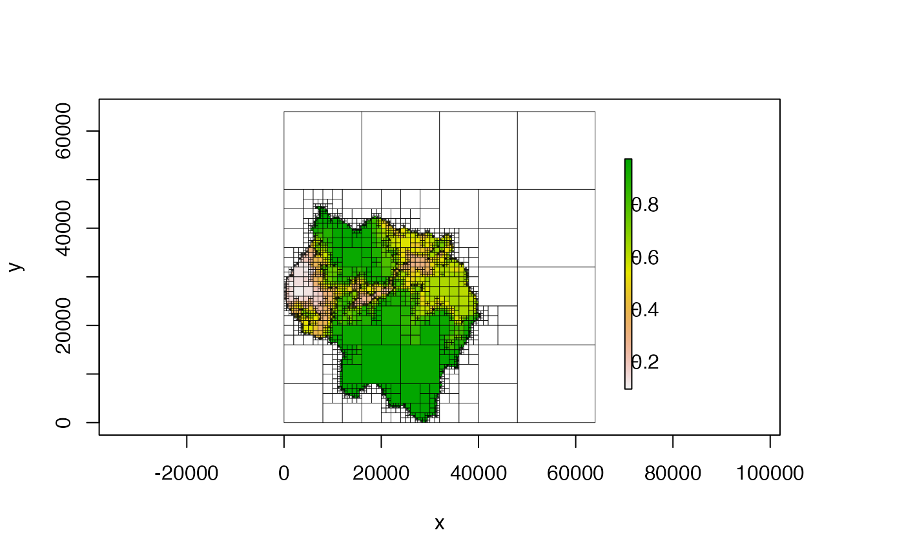

Adds a gradient legend to a plot
add_legend( zlim, col, alpha = 1, lgd_box_col = NULL, lgd_x_pct = 0.5, lgd_y_pct = 0.5, lgd_wd_pct = 0.5, lgd_ht_pct = 0.5, bar_box_col = "black", bar_wd_pct = 0.2, bar_ht_pct = 1, ticks = NULL, ticks_n = 5, ticks_x_pct = 1 )
| zlim | two-element numeric vector; required; the min and max value of z |
|---|---|
| col | character vector; required; the colors that will be used in the legend. |
| alpha | numeric; transparency of the colors. Must be in the range 0-1, where 0 is fully transparent and 1 is fully opaque. Default is 1. |
| lgd_box_col | character; color of the box to draw around the entire
legend. If |
| lgd_x_pct | numeric; location of the center of the legend in the x-dimension, as a fraction (0 to 1) of the right margin area, not the entire width |
| lgd_y_pct | numeric; location of the center of the legend in the
y-dimension, as a fraction (0 to 1). Unlike |
| lgd_wd_pct | numeric; width of the entire legend, as a fraction (0 to 1) of the right margin width |
| lgd_ht_pct | numeric; height of the entire legend, as a fraction (0 to 1) of the figure height |
| bar_box_col | character; color of the box to draw around the color bar.
If |
| bar_wd_pct | numeric; width of the color bar, as a fraction (0 to 1) of the width of the legend area (not the entire right margin width) |
| bar_ht_pct | numeric; height of the color bar, as a fraction (0 to 1) of the height of the legend area (not the entire right margin height) |
| ticks | numeric vector; the z-values at which to place tick marks. If
|
| ticks_n | integer; the number of ticks desired - only used if
|
| ticks_x_pct | numeric; the x-placement of the tick labels as a fraction (0 to 1) of the width of the legend area. This corresponds to the right-most part of the text - i.e. a value of 1 means the text will end exactly at the right border of the legend area |
no return value
I took an HTML/CSS-like approach to determining the positioning -
that is, each space is treated as <div>-like space, and the position of
objects within that space happens relative to that space rather then
the entire space. The parameters prefixed by lgd are all relative to
the right margin space and correspond to the box that contains the entire
legend. The parameters prefixed bar and ticks are relative to
the space within the legend box.
I obviously wrote this for plotting the quadtree, but there's nothing quadtree-specific about this particular function.
This function is used within plot(), so the user shouldn't
call this function to manually create the legend. Customizations to the
legend can be done via the legend_args parameter of
plot(). Using this function to plot the legend after using
plot() raises the possibility of the legend not corresponding
correctly with the plot, and thus should be avoided.
set.seed(23) mat <- matrix(runif(64, 0, 1), nrow = 8) qt <- quadtree(mat, .75) par(mar = c(5, 4, 4, 5)) plot(qt, legend = FALSE)# this example simply illustrates how it COULD be used, but as stated in the # 'Details' section, it shouldn't be called separately from 'plot()' - if # customizations to the legend are desired, use the 'legend_args' parameter # of 'plot()'.